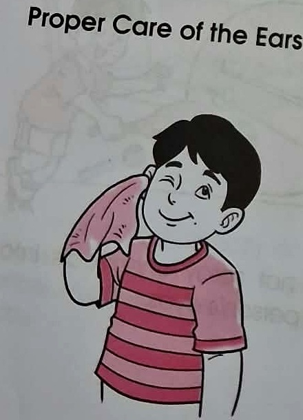
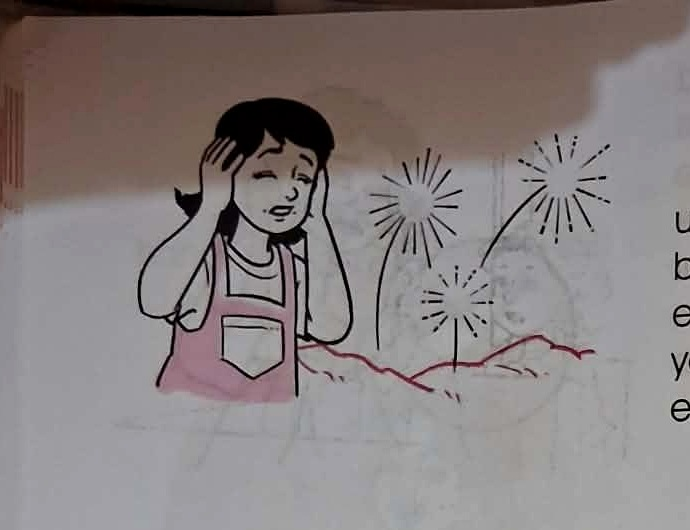

Science 1 • Lesson 9
Taking Care of the Ears
Learn how to keep your ears safe, clean, and protected from things that may hurt them.
0 ⭐Stars
0 🏆Badges
0%Mastery

A cropped picture from the supplied textbook page. Look closely: the lesson shows safe ways to care for the ears.
Your Learning Journey
0 / 8 stages0 points
🏫 Connect: What Do You Notice?
Before we learn, think about your ears and the sounds around you.

Look carefully.
What is the child doing with the ears?
Teacher Ed says:
Our ears are delicate sense organs. They help us hear, so we need to care for and protect them.
careprotectionsafe habits